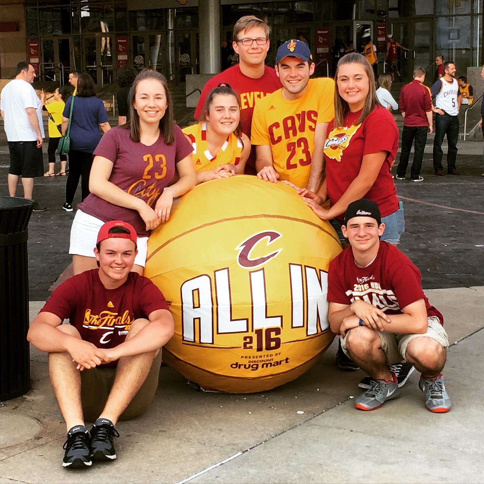
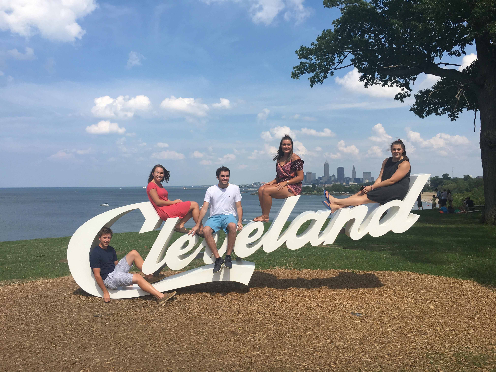
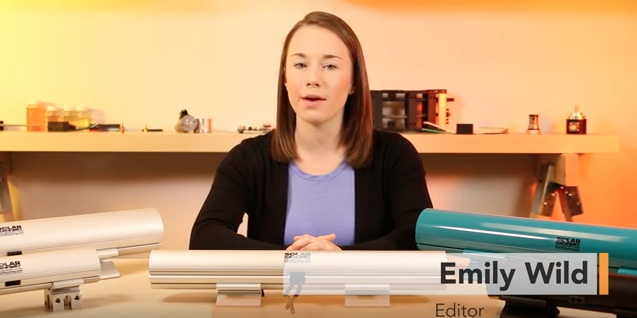
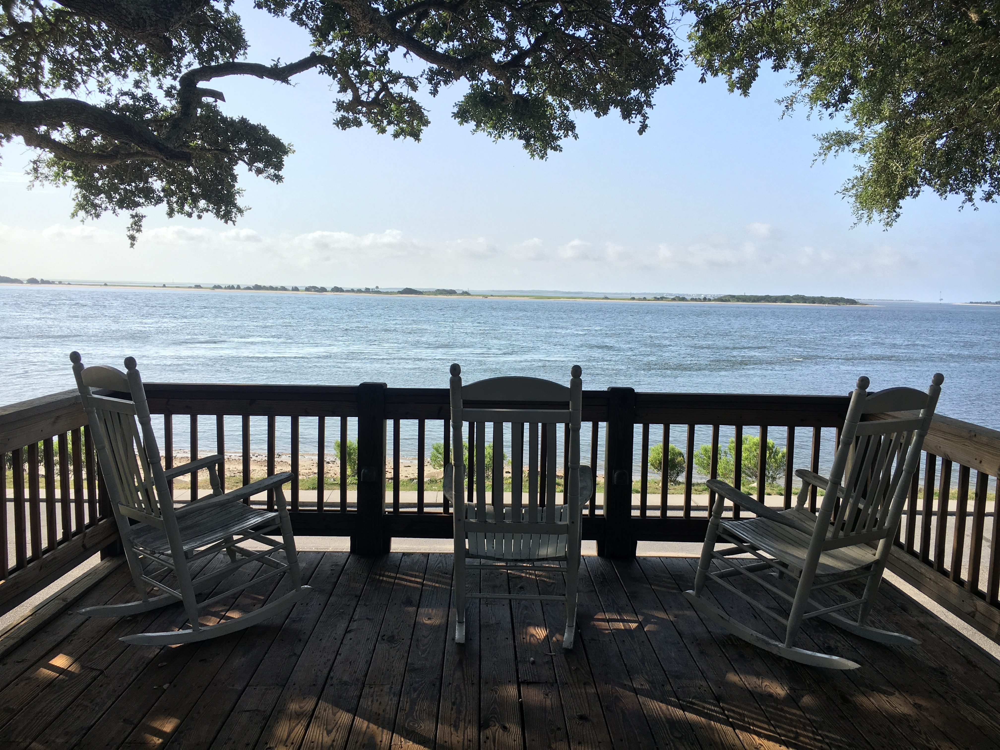
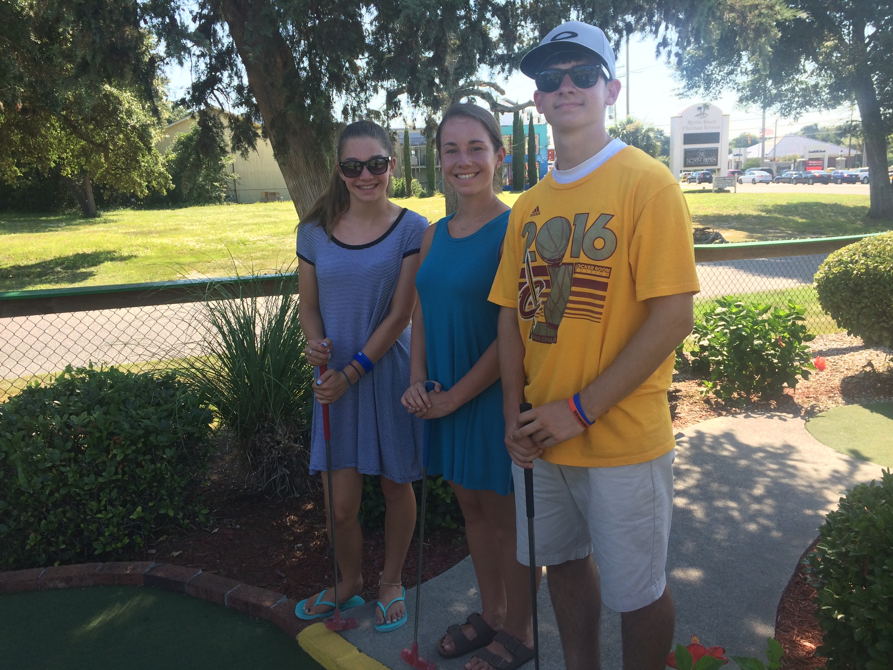
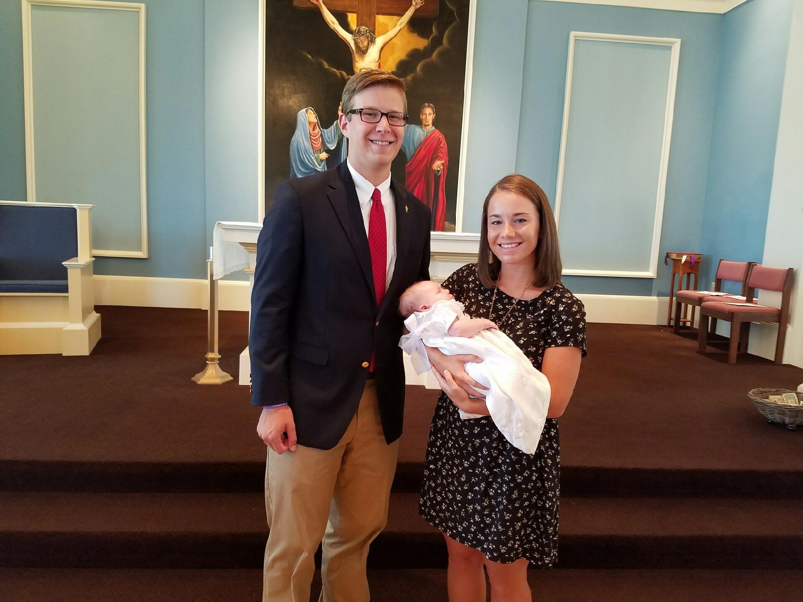
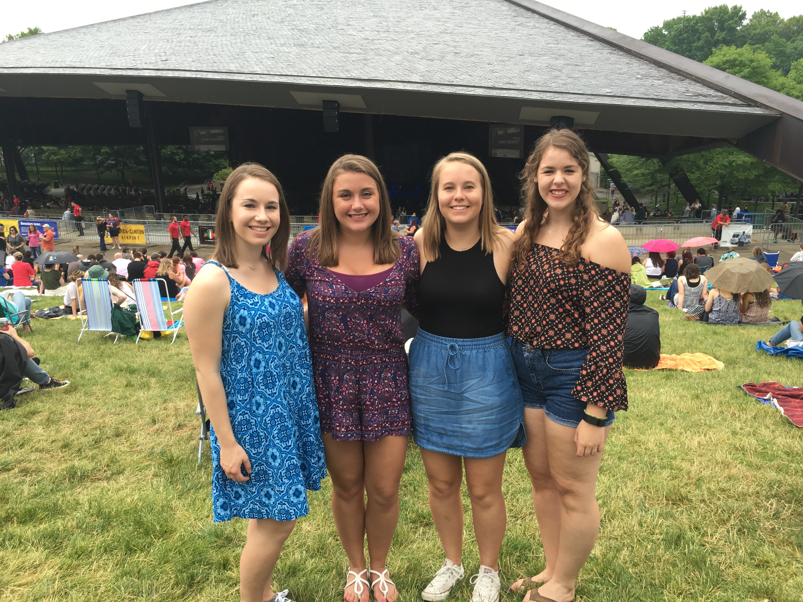

This past summer was full of new opportunities, exploring with friends and relaxing with family. From the excitement of watching Cleveland get its first major sports championship in 52 years, to having an awesome internship, to traveling with family, my summer was definitely one to remember. Here are some of the highlights!
Getting to know my city
Over the summer, I got to explore downtown Cleveland, which I live 15 minutes away from, more than I ever have before. I worked downtown three days a week, and although rush hour traffic was never fun, I always felt like a part of the downtown culture. I went to the Twenty One Pilot’s concert with a group of my friends at Cleveland State’s Wolstein Center at the beginning of June, which ended up being the best concert I’ve ever been to. I discovered some amazing restaurants that are now my go-to spots. One, called Restore Cold Pressed, has amazing Acai bowls and another, called Barrio, has the best tacos in town. My friends and I took a day to go to all of Cleveland’s tourist spots, like the Rock and Roll Hall of Fame and the giant Cleveland sign that overlooks Lake Erie and the skyline. But my favorite memory of being in downtown Cleveland this summer was standing outside of Quicken Loans Arena on June 19 and watching the Cavaliers beat Golden State in game 7 of the NBA Finals. When Kyrie Irving hit the go-ahead 3-pointer, I was among the thousands of fans downtown who erupted into screams of celebration and tears of joy. It was truly a historical moment I will never forget, and made me even prouder than I already was to be from such a great city.
Interning at WTWH Media

I had the opportunity to work at a media company in downtown Cleveland three days a week called WTWH Media. WTWH is home to six separate business-to-business publications, and the one that I worked for was called Solar Power World magazine. Solar Power World has a print magazine that comes out every other month, a handbook that comes out once a year and a website and social media outlets that are updated every single day. All of the content is geared toward people in the solar industry, especially solar contractors, and has thousands of subscribers all over the world. In my position as editorial intern, I interviewed many solar contractors and wrote twelve articles for the magazine’s annual solar handbook. I also recorded and edited podcasts, filmed a product video and managed the publication’s Facebook and Twitter accounts. One of the best parts was that I got to work in a relaxed office setting with people that I now consider good friends. I was able to be a part of the company-wide meeting in June where I took part in fun bonding activities, including a trolley tour of Cleveland and an escape room challenge. This internship gave me a great foundation for a possible future career. Click the image below to watch my product video!
Visiting North Carolina
It is a summer tradition for my family and I to travel to Southport, North Carolina to visit my grandparents. It is one of my favorite and most relaxing weeks of the entire year, and a trip that my summer is never complete without. Southport is a very small, friendly town best known for being the filming location of the Nicholas Sparks’ movie Safe Haven a few years ago. Every morning, I walked to the quaint downtown area of Southport and ordered my usual coffee from the local shop, an iced black and tan mocha to be exact. I sipped it while sitting in a rocking chair overlooking the Cape Fear River, which runs through the intracoastal waterway into the Atlantic Ocean. It was always entertaining to see what the fishermen on the dock might catch and what kind of boats might pass through. Also while downtown, I visited the farmers' market which featured many local jewelry, clothing and craft vendors, and took a look in all of the local boutiques that line the main street. My family and I also enjoyed spending time by the pools, boogie boarding at the beach and shopping at the Myrtle Beach outlet malls. It was a fun, relaxing trip and reminded me how important it is to take a step back from the business of every day and spend time with family, even just for a week.
Becoming a godmother
My goddaughter Kristen Martha, who is my little cousin, was born on June 4. She lives in Columbus and I met her for the first time when she was one month old. My little sister and I had a lot of fun picking out baby clothes and toys for her. It was so much fun getting to hold her and give her bottles, and she even smiled a few times. I went back to Columbus about a month later for her baptism. My brother, who is her godfather, and I got to hold her and light her baptismal candle during mass in front of our entire family, which was a very special moment. She is growing so fast already and I'm looking forward to seeing her again and watching her grow up!
Hosting friends
My two best friends from freshman year, Hannah and Andrea visited from Cincinnati this summer. The Friday they came, I had a lot of fun driving them around my town and took them to my favorite burger place. We also went to a movie. The next day, I took them to the nearby Lake Erie beach since they had never seen a Great Lake before. That night, the three of us and my best friend from home, Allison, went to the Of Monsters and Men and Florence and the Machine concert at Blossom Music Center. It rained the entire night, but we still made it a fun experience. Their trip, although not long, was a lot of fun and I'm so glad I got to seem them over the summer.